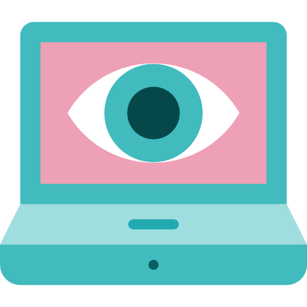

Как это работает
В данном приложении используется экспозиционная терапия для помощи в преодолении страха высоты. Пользователь начинает с простых 360° панорам и постепенно переходит к более сложным уровням экспозиции.
Основные этапы

Выбор уровня
Пользователь выбирает начальный уровень экспозиции (например, низкие высоты), чтобы адаптироваться и привыкнуть к виртуальной среде.

Погружение в VR
При помощи 3D-панорам или 360° видео создаётся реалистичное ощущение высоты, но в безопасной обстановке.

Отслеживание тревоги
Пользователь оценивает уровень тревоги на каждом этапе, постепенно осваиваясь и замечая снижение страха.